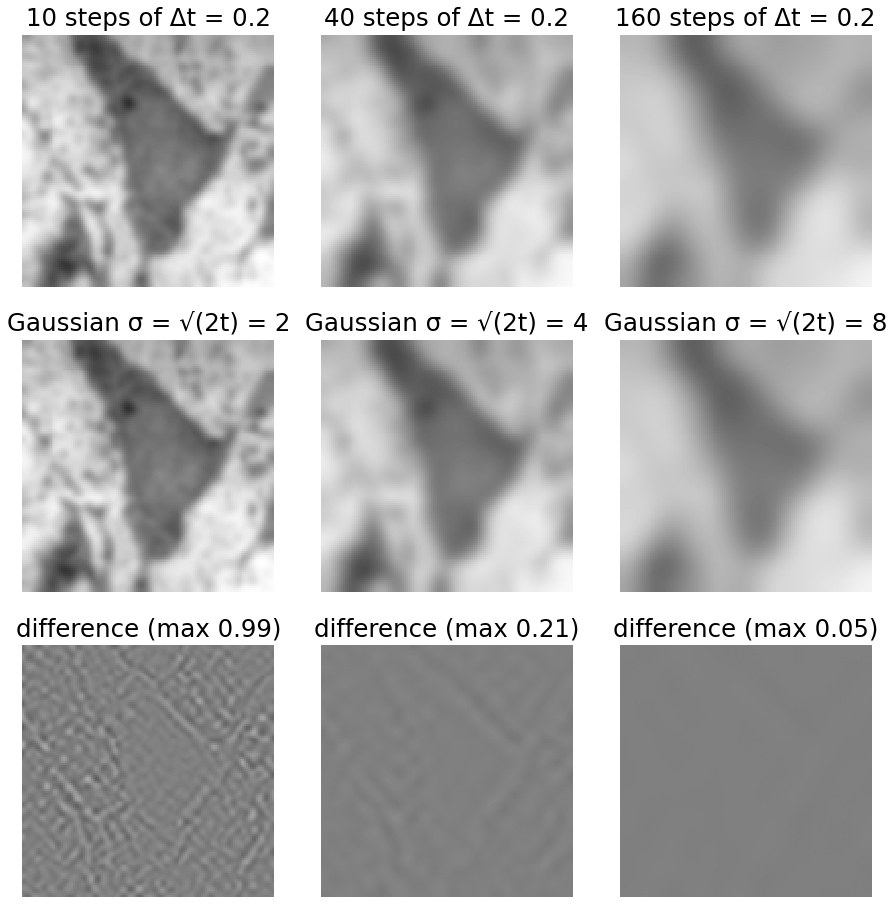
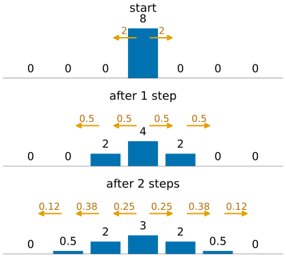
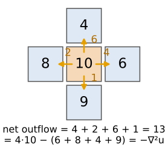
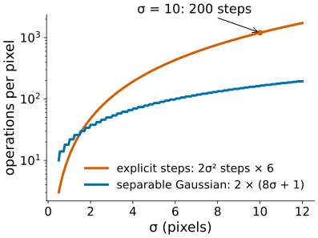
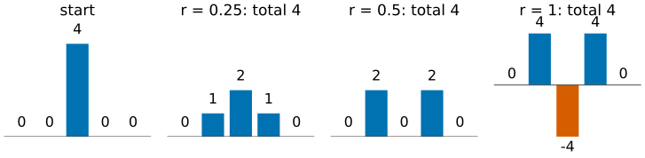
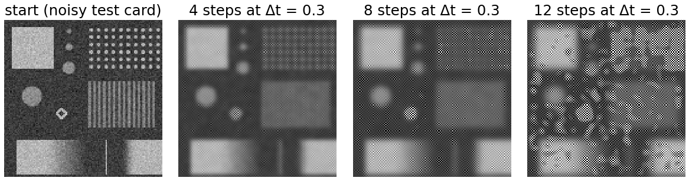
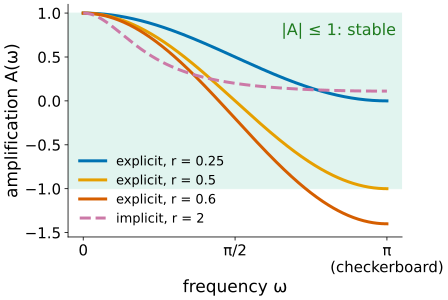
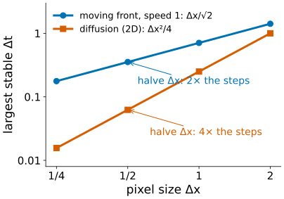
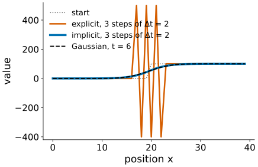

A Gaussian blur can be built by a process: let every pixel move a little towards its neighbours, and repeat. This is the heat equation, and it is the starting point of the whole day: every edge-preserving smoother later today is “diffusion with a twist”.
Slides titled The math give the formulas and proofs; the ideas are complete without them.
From the edges day (scale space): blurring with Gaussians of growing σ gives a family of ever smoother images, and no new structures appear on the way (causality).
A math slide there said the same family solves a diffusion equation. Today that slide becomes the main idea:
This day writes the equation as u_t = \Delta u (the usual form in the literature); the edges day used \partial_t L = \tfrac12 \nabla^2 L with t = \sigma^2. Same equation, time measured differently.

Micrograph: Robert M. Hunt, CC BY 3.0, via Wikimedia Commons.
One step: every pixel moves a fraction \Delta t of the way from itself towards the sum of its neighbours’ differences:
u \leftarrow u + \Delta t\,(\text{sum of the 4 neighbours} - 4u)
The bracket is the Laplacian kernel \begin{smallmatrix}0&1&0\\1&-4&1\\0&1&0\end{smallmatrix}, so one step is u \leftarrow u + \Delta t\,\nabla^2 u.

The flow out of a pixel into a neighbour is proportional to their difference (Fourier’s law: heat flows down the gradient).
The net outflow of a pixel is the sum of its four flows. In the example: 4 + 2 + 6 + 1 = 13 = 4 \cdot 10 - (6 + 8 + 4 + 9), which is minus the Laplacian.
So the step says: the change of a pixel = minus its net outflow (times \Delta t). In continuous form this is “the change = minus the divergence of the flux”, the divergence measuring net outflow (as for a moving front in the level-set elective).

Run the heat equation for a time t: the result is the start image convolved with a Gaussian of
\sigma = \sqrt{2t}.
For a plain Gaussian blur: never. The explicit scheme needs t/\Delta t = \sigma^2/(2\Delta t) steps; at the largest stable step \Delta t = 1/4 that is 2\sigma^2 steps. σ = 10 takes 200 steps; a separable Gaussian does it with 2 × 81 multiplications per pixel.
The PDE view pays off the moment the rule depends on the image:
Neither is a convolution any more, but both are “a few lines in the step”.

A 1D row (0, 0, 4, 0, 0) and r = \Delta t/\Delta x^2:
| r | after one step | total |
|---|---|---|
| 1/4 | (0, 1, 2, 1, 0) | 4 |
| 1/2 | (0, 2, 0, 2, 0) | 4 |
| 1 | (0, 4, −4, 4, 0) | 4 |

Keep going with r = 1: (4, −8, 12, −8, 4), then (−8, 24, −28, 24, −8), … The signs alternate from pixel to pixel and the values grow every step: a checkerboard pattern.
In 2D the same happens at 1.2 times the limit: any trace of the finest checkerboard (noise has some) is amplified by 1.4 per step.
Rule (“no pixel may give away more than it has”): the centre weight 1 - 2d\,r must not be negative:
\Delta t \le \frac{\Delta x^2}{2d}
\Delta x^2/2 in 1D, \Delta x^2/4 in 2D, \Delta x^2/6 in 3D.

Insert one Fourier mode u_j^n = A^n e^{ij\omega} into the 1D step u_j^{n+1} = u_j^n + r(u_{j-1}^n - 2u_j^n + u_{j+1}^n):
A = 1 + r(e^{-i\omega} - 2 + e^{i\omega}) = 1 - 4r\sin^2\tfrac{\omega}{2}.

In the level-set elective (level-set equation) a curve moves with speed F, and an explicit step may move the front at most one pixel (Courant–Friedrichs–Lewy):
\Delta t \le \frac{\Delta x}{\sqrt2\,|F|} \quad \text{(2D)}.
Diffusion is stricter: \Delta t \le \Delta x^2/4 grows with the square of the pixel size.
| front | diffusion | |
|---|---|---|
| limit | \propto \Delta x | \propto \Delta x^2 |
| halve the pixel size | 2× the steps | 4× the steps |
| work in 2D (× 4 pixels) | 8× | 16× |

Instead of computing the new image from the old one, solve for it: the new image is the one whose own Laplacian step leads back to the old image,
(I + \Delta t\,L)\,u^{\text{new}} = u^{\text{old}}.
